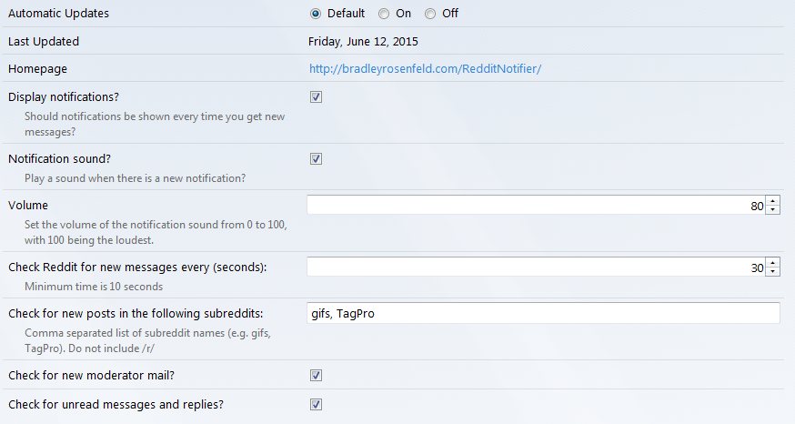

How to use
-
Make sure you have a reddit account and that you are logged in. You can register for an account at reddit.com.
Once you are logged in, the addon will automagically work. You don't need to enter your login credentials into the addon.
-

This is the addon button. It will display the number of unread messages that you have on reddit.
Clicking the addon button will open your unread inbox on reddit.
Opposite clicking the addon button will manually force a refresh of your unread count.
-

Notifications appear when you receive new messages on reddit.
They can be disabled in the options section on the addon page.
-

Addon settings can be found in about:addons. Navigate through your installed addons and click the options button on "RedditNotifier"
Available Options
-
Display notifications? (Default: true)
Too many people replying to your comment? You can disable notifications so you don't see a new notification every time there is a new message.
-
Try to keep the addon button visible. (Default: true)
This option will keep your addon button in the taskbar if it is hidden.
-
Check Reddit for new messages every (num) seconds (Default: 30 seconds)
Changing this option will change how often RedditNotifier checks reddit for new messages. The minimum time is 30 seconds.
-